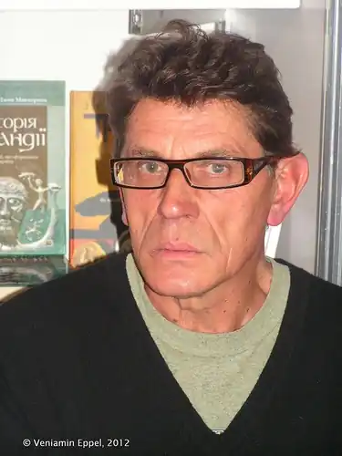

23.02.1951
Відомий сучасний письменник Медвідь (спр. прізвище Медвєдєв) В’ячеслав Григорович народився в селі Кодня Житомирського району в сім'ї службовців. Старшокласником впевнено торував творчу стежину на шпальтах житомирської районної газети. Писав про людей, прагнучи неодмінно хоч якоюсь рискою відтворити особливості сільських традицій, звичаїв, обрядів, захоплювався майстрами народної творчості, умільцями, прагнув зберегти найхарактерніші висловлювання в їх недоторканій красі.
Після закінчення 1968 року середньої школи із срібною медаллю їде до Києва і складає іспити на відділення філології Київського держуніверситету. Не набравши потрібних балів подає документи до Київського інституту культури, куди його зараховують на бібліотечний факультет, відділення масових та наукових бібліотек. Після закінчення навчання В’ячеслав Медвідь їде за направленням до Ужгорода, де працює методистом у Закарпатській обласній бібліотеці для дітей. Потім служба у збройних силах. З армії повернувся до Ужгорода, але не надовго. У 1975 році повертається до Києва, працює у різних бібліотеках міста, у мережі книготоргу, видавництві "Дніпро". З 1988 року – на творчій роботі. У 1981 році в Києві виходить книжка новел "Розмова". Ужгородський період став для молодого письменника певним європейським вишколом: багатомовність закарпатського краю, екзотична природа, архітектура. Однак з часом новелістичне мислення переходить на спробу опанування епічним романтичним жанром. До книжки прози "Заманка" (1984) деякі критики поставилися вороже, не сприйняли лексики і стилістики автора. У творах В’ячеслава Медвідя ми бачимо реальний, реалістичний побут, але значно "спресований" оригінальною стилістикою. Але пануюча теоретична доктрина не хотіла приймати такої стилістики. Аж ось з’являються "Таємне сватання" (1987), "Збирачі каміння" (1989), "Льох" (2000) і, нарешті, "Кров по соломі" (2002). Часи змінилися і В’ячеслава Медвідя стали порівнювати з М. Прустом, Джойсом і Фолкнером. Чим далі, В. Медвідь відходить від традиційного реалістичного письма й експериментує у сфері стилістики і моделювання філософських медитацій, у яких буденність і звичайна людина постають на тлі всесвітніх вимірів. Роман "Льох" – є експериментаторським, який жанрово не співпадає з класичним уявленням про роман. Автор, послуговуючись побутовими деталями, мовною імітацією, майстерними портретними штрихами розгортає алегорію потаємного в людському єстві. За формою роман є самобутнім художнім дослідженням загадкових граней людської душі. На сьогодні "Льох" є не лише одним із кращих у доробку письменника, а й одним із знакових серед творів нової генерації. З початку 90-х років В'ячеслав Медвідь радує філософською есеїстикою та глибокими спостереженнями у мемуаристиці, але й тут він залишається вірним своїй манері письма. Найпомітнішою есеїстичною публікацією можна назвати "Філософію страху або ж проклятий народ: щоденники" (Українські проблеми, 1994-1995). Захоплення есеїстикою не минуло безслідно. На відміну від попередніх творів, герої роману "Кров по соломі" ведуть ідеологічні дискусії, розмірковуючи над світоглядною та політичною проблематикою. Зміст твору присвячений рідному селу автора Кодні: його менталітету і жителям. В романі багато сюжетних побудов, сюжетних доль. Роман тільки на перший погляд сприймається як велетенський безсюжетний масив. Описані події єднаються в один твір внутрішньою політикою мовлення. По суті, мова є головним персонажем роману. Сенс твору розкривається через розмову персонажів. Герої В’ячеслава Медвідя виступають носіями колективного досвіду, який завжди присутній у живій мові народу. Роман народжувався протягом 10 років. "Я прославив своє село на Житомирщині, – сказав В’ячеслав Медвідь 4 березня 2003 р. на зустрічі із студентами-філологами Житомирського педагогічного університету. – Прославлю і в усьому світі". За написання роману письменник одержав Державну премію ім. Т. Г. Шевченка. Творчість В'ячеслава Медвідя відносять до елітарної немасової літератури. Незвична авангардна форма, відмова від загальноприйнятих мовних норм потребує від читача більшої поглибленості і замисленості. Але справжній читач оцінить самобутність, новаторство і оригінальність його творчості. Окремі його твори перекладалися російською, іспанською, литовською та чеською мовами.